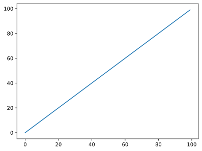

Title of your tutorial¶
Author: M Faulkner¶
Date: 12/06/2020¶
About tutorial¶
This is a testing tutorial to see how this all works
First import everything you need
[1]:
import matplotlib.pyplot as plt
import os
import numpy as np
from brainbox import plot
import alf.io
from my_module import add_numbers
Next make a simple plot
[2]:
x = np.arange(100)
y = np.arange(100)
plt.plot(x,y)
[2]:
[<matplotlib.lines.Line2D at 0x1b257894c48>]

[3]:
ra = add_numbers(3, 4)
print(ra)
7
Test out the help function to make sure it can find ibllib stuff
[4]:
help(alf.io.load_file_content)
Help on function load_file_content in module alf.io:
load_file_content(fil)
Returns content of files. Designed for very generic file formats:
so far supported contents are `json`, `npy`, `csv`, `tsv`, `ssv`, `jsonable`
:param fil: file to read
:return:array/json/pandas dataframe depending on format